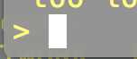
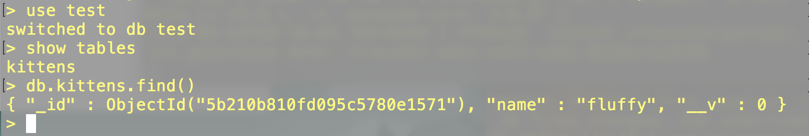

mongodb的启动、连接以及如何通过mongoose操作数据库
mongodb作为非关系型数据库的翘楚可以说使用越来越广泛，再加上其优雅的操作语法、完善的文档、强大的功能，受到越来越多开发者的青睐；本文主要介绍mac上如何启动本地数据库并连接，如何在js代码里通过mongoose操作mongodb数据库
一、通过终端启动本地服务端
假如本地已经安装好mongodb，则在终端直接输入sudo mongod
需要输入密码，键入密码即可启动一个mongo的服务端；
二、连接本地服务端
上面终端已经启动一个本地服务端，我们需要另起一个终端，输入mongo --host 127.0.0.1:27017
即可连接本地服务端
当我们在连接终端看到右向的小箭头
服务端终端显示
即表示连接成功；
这里记录一下操作mongodb数据库常用指令：
show dbs显示当前所有数据库db显示当前所在的数据库use myDatabase切换到你要切换的数据库show collections显示当前数据库所有的集合show tables也是用来查看当前库的集合db.getCollectionNames()查看文档中所有集合的名称，其返回值是一个数组db.getCollection("NAME")查看单个集合
三、如何通过mongoose连接本地服务并操作数据库
1 | var mongoose = require('mongoose');// 首先需要通过npm i mongoose 来安装mongoose并引用 |
这时我们可以通过use test将数据库切换到test下，然后通过show collections查看当前所有集合，最后通过db.kittens.find()查到刚刚我们插入的数据，如图：

至此，我们如何通过终端启动本地数据库服务、如何通过终端连接本地数据库、如何在js代码里通过mongoose连接并操作数据库就介绍完了。